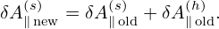
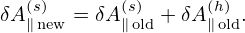

![[ ]
∂- +(v∥e∥ + VD + δVD ) ⋅∇X δG0
∂t
= − δV ⋅∇ F −-q ∂⟨δL-⟩α-∂F0, (142)
D X 0 m ∂t ∂𝜀](nonlinear_gyrokinetic_equation150x.png)
In the case of F0(𝜀,μ,α,X) being isotropic (∂F0∕∂μ = 0 and ∂F0∕∂α = 0 in guiding-center coordinates), Frieman-Chen’s gyrokinetic equation (127) is written as
where δG0 is the gyro-phase independent part of the perturbed distribution δF, and is related to δF by
 | (143) |
where the ï¬rst term is called “the adiabatic term”, which depends on gyro-phase α via δΦ. In Eq. (142), δL = δΦ − v ⋅ δA.
Note that the coefficient before ∂F0∕∂𜀠in Eq. (142) involves the time derivative of ⟨δϕ⟩α, which is problematic if treated by using explicit ï¬nite difference in particle simulations (I test the algorithm that treats this term by implicit scheme, the result roughly agrees with the standard method discussed in Sec. 7). It turns out that ∂⟨δΦ⟩α∕∂t can be eliminated by deï¬ning another gyro-phase independent function δf by
 | (144) |
Then, in terms of δf, the perturbed distribution function δF is written as
 | (145) |
Using Eq. (144) and Eq. (142), the equation for δf is written as
![[ ]
∂-+ (ve + V + δV )⋅∇ δf
∂t ∥∥ D D X
q-∂F0-[-∂ ]
− m ∂𜀠∂t + (v∥e∥ + VD + δVD )⋅∇X ⟨δϕ⟩α
q [ ∂ ] ∂F
− --⟨δϕ⟩α -- +(v∥e∥ + VD + δVD )⋅∇X ---0
m ∂t ∂𝜀
= − δVD ⋅∇XF0 − q-∂⟨δL⟩α∂F0- (146)
m ∂t ∂𝜀](nonlinear_gyrokinetic_equation154x.png)
The blue term in expression (145) gives “the polarization density†when integrated in the velocity space (discussed in Sec. 7). The reason for the name “polarization†is that (δΦ −⟨δΦ⟩α) is the difference between the local value and the averaged value on a gyro-ring, expressing a kind of “separation”.
Similar to the method of eliminating ∂⟨δϕ⟩α∕∂t, we deï¬ne another gyro-phase independent function δh by
 | (148) |
then Eq. (147) is written in terms of δh as
![[ ]
∂-+ (v∥e∥ + VD +δVD ) ⋅∇X δh
∂t [( ) ]
-q ∂F0- ∂-
+m ∂𜀠∂t + v∥e∥ + VD + δVD ⋅∇X ⟨v ⋅δA ⟩α
q [( ∂ ) ] (∂F )
+--⟨v ⋅δA⟩α --+ v∥e∥ + VD + δVD ⋅∇X ---0
m ∂t ∂𝜀
= − δV[D ⋅∇XF0 ]
−-q − ∂⟨v-⋅δA⟩α − (v e +VD + δVD )⋅∇X ⟨δΦ⟩α ∂F0-, (149)
m ∂t ∥ ∥ ∂𝜀](nonlinear_gyrokinetic_equation157x.png)
Most gyrokinetic simulations approximate the vector potential as δA ≈ δA∥e∥. Let us simplify Eq. (151) for this case. Then ⟨v ⋅ δA⟩α is written as
 | (153) |
Note that in terms of (X,𝜀,μ,α,σ) coordinates, v∥ is written as
 | (154) |
where B0(x) = B0(X + ρ) with ρ = ρ(X,𝜀,μ,α). Since the scale length of B0 is much larger than the thermal Larmor radius, B0(x) ≈ B0(X) and hence v∥ of thermal particles can be approximately considered to be independent of the gyro-angle α. Then v∥ can be taken out of the gyro-averaging in expression (153), yielding
 | (155) |
Using this, the term related to δA in (151) is written as


In simulations, I use Eq. (158) and set δA∥ to zero to get the electrostatic version, rather than using  Eq. (147) as the electrostatic version (the latter contains a nonlinear term on the right-hand side, which seems strange.)
In the above, the perturbed part of the distribution function, δF, is split at least three times in order to (1) simplify the gyrokinetic equation by splitting out the adiabatic response and (2) eliminate the time derivatives, ∂δϕ∕∂t and (3) ∂δA∕∂t, on the right-hand. To avoid confusion, I summarize the split of the distribution function here. The total distribution function F is split as
 | (159) |
where F0 is the equilibrium distribution function and δF is the perturbed part of the total distribution function. δF is further split as
 | (160) |
where δh satisï¬es the gyrokinetic equation (151) or (158). In Eq. (160), the red term gives rise to the so-called polarization density (discussed in Sec. 7), which explicitly depends on δΦ. This term is moved to the left-hand side of the Poisson equation and is utilized in solving the Poisson equation. The blue term also has an explicit dependence on δA, which, however, will cause numerical problems in particle simulations if it is moved to the left-hand side of the Ampere equation, giving rise to the so-called “cancellation problem†in gyrokinetic simulations.
 ⟨v ⋅ δA⟩α
⟨v ⋅ δA⟩αConsider the approximation δA ≈ δA∥e∥, then the blue term in Eq. (160) is written as
 | (161) |
Notice that v∥ can be taken out of the gyro-averaging. Then the above equation is written
 | (162) |
If we neglect the FLR effect, then the above expression is written
 | (163) |
The zeroth order moment (number density) is then written as
 | (164) |
which is zero if F0 is Maxwellian. Next, consider the parallel current carried by distribution (163), which is written
 | (165) |
If F0 is a Maxwellian distribution given by
 | (166) |
then
 | (167) |
Then expression (165) is written
|
| (168) |
Working in the spherical coordinates, then v∥ = v cos𜃠and dv = v2 sin𝜃dvd𝜃dϕ. Then expression (168) is written

 | (171) |
The parallel currents are given by
 | (172) |
 | (173) |
where δJ∥i′ and δJ∥e′ is the parallel current carried by the distribution function δh in Eq. (160), which are updated from the value at the nth time step to the (n + 1)th time step using an explicit scheme and therefore does not depends on the ï¬eld at the (n + 1)th step. The blue terms in Eqs. (172) and (173) depend on the unknown ï¬eld at the (n + 1)th step and thus need to be moved to the left-hand side of Ampere’s law (171) if we want to solve this equation by direct methods. In this case, equation (171) is written as

Therefore we go back to Eq. (171) and try to solve it using iterative methods. However, it is found numerically that directly using Eq. (171) as an iterative scheme is usually divergent. To obtain a convergent iterative scheme, we need to have an approximate form for the blue terms, which is independent of markers and so that it is easy to construct its matrix, and then subtract this approximate form from both sides. After doing this, the iterative scheme has better chance to be convergent. An approximate form is that derived by neglecting the FLR effect given in Sec. 5.4. Using this, the iterative scheme for solving Eq. (171) is written as
In the drift-kinetic limit (i.e., neglecting the FLR effect), the blue and red terms on the right-hand side of the above equation cancel each other exactly. Even in this case, it is found numerically that these terms need to be retained and the blue terms are evaluated using markers. Otherwise, numerical inaccuracy can give numerical instabilities, which is the so-called cancellation problem. The explanation for this is as follows. The blue terms are part of the current. The remained part of the current carried by δh is computed by using Monte-Carlo integration over markers. If the blue terms are evaluated analytically, rather than using Monte-Carlo integration over markers, then the cancellation between this analytical part and Monte-Carlo part can have large error (assume that there are two large contribution that have opposite signs in the two parts) because the two parts are evaluated using different methods and thus have different accuracy, which makes the cancellation less accurate.The blue terms are sometimes called “adiabatic current”. The red terms are approximation to the “adiabatic current†obtained by neglecting the FLR effect. Because the ion adiabatic current is less than the electron adiabatic current by a factor of me∕mi, its accuracy is not important, and is approximated by the drift-kinetic limit in GEM. And the cancellation error is not a problem and hence can be neglected. In this case, equation (175) is simpliï¬ed as
The perturbed distribution function is decomposed as given by Eq. (160), i.e.,
 | (177) |
where the term in blue is the so-called adiabatic response, which depends on the gyro-angle. Recall that the red term ⟨δΦ⟩α, which is independent of the gyro-angle, is introduced in order to eliminate the time derivative ∂⟨δΦ⟩α∕∂t term on the right-hand side of the original Frieman-Chen gyrokinetic equation.
The so-called generalized split-weight scheme corresponds to going back to the original Frieman-Chen gyrokinetic equation by introducing another ⟨δΦ⟩α term with a free small parameter 𝜖g. Speciï¬cally, δh in the above is split as
 | (178) |
(If 𝜀g = 1, then the two ⟨δΦ⟩α terms in Eq. (177) and (178) cancel each other.) Substituting this expression into Eq. (152), we obtain the following equation for δhs:
Noting that ∂F0∕∂t = 0, e∥⋅∇F0 = 0, ∇F0 ∼ O(λ1)F0, we ï¬nd that the third line of the above equation is of order O(λ3) and thus can be dropped. Moving the second line to the right-hand side, the above equation is written as
For the special case of 𝜖g = 1 (the default and most used case in GEM code, Yang Chen said 𝜖g < 1 cases are sometimes not accurate, so he gave up using it since 2009), equation (180) can be simpliï¬ed as:
where two VG ⋅⟨δΦ⟩α terms cancel each other. Because the v∥E∥ term is one of the factors that make kinetic electron simulations difficult, eliminating VG ⋅⟨δΦ⟩α term may be beneï¬cial for obtaining stable algorithms.For 𝜖g = 1, δF is written as

Equation (181) actually goes back to the original Frieman-Chen equation. The only difference is
that  ⟨v ⋅δA⟩α
⟨v ⋅δA⟩α is further split from the perturbed distribution function. Considering this, equation
(181) can also be obtained from the original Frieman-Chen equation (142) by writing δG0
as
is further split from the perturbed distribution function. Considering this, equation
(181) can also be obtained from the original Frieman-Chen equation (142) by writing δG0
as
 | (183) |
In this case, δF is written as
 | (184) |
Substituting expression (183) into equation (142), we obtain the following equation for δhs:
Noting that ∂F0∕∂t = 0, e∥⋅∇F0 = 0, ∇F0 ∼ O(λ1)F0, we ï¬nd that the third line of the above equation is of order O(λ3) and thus can be dropped. Moving the second line to the right-hand side, the above equation is written as which agrees with Eq. (181).In GEM, the split weight method is used only for electrons and the ∂⟨δΦ⟩α∕∂t is approximated by ∂δΦ∕∂t and this term is obtained from the vorticity equation (rather than from an implicit iteration).
In particle simulations, the seemingly trivial thing on how to split the distribution function is often considered to be a big deal. Separating the perturbed part from the equilibrium part is considered to be a big deal and got the famous name “δf particle method”, in contrast to the conventional particle method which is now called full-f particle method. Summarizing the above result, the total distribution function F is split in the following form:

![[ ]
∂- +(v e + V + δV )⋅∇ δh
∂t ∥ ∥ D D X
= − δVD ⋅∇XF0
q- ∂F0-
− m[(v∥e∥ + VD + δVD )⋅∇X (⟨v⋅δA − δΦ ⟩α)] ∂𜀠, (150)](nonlinear_gyrokinetic_equation158x.png)
![[ ]
∂-+ (v∥e∥ + VD + δVD )⋅∇X δh
∂t
= − δVD ⋅∇XF0
-q ∂F0-
− m [(v∥e∥ + VD ) ⋅∇X ⟨v ⋅δA − δΦ⟩α]∂𜀠. (151)](nonlinear_gyrokinetic_equation159x.png)
![[ ]
∂- +VG ⋅∇X δh
∂t
= − δV ⋅∇ F − -q[V ⋅∇ ⟨v⋅δA − δΦ ⟩]∂F0-. (152)
D X 0 m G X α ∂𝜀](nonlinear_gyrokinetic_equation160x.png)
![[ ∂ ]
∂t + (v∥e∥ + VD +δVD ) ⋅∇X δh
= − δVD ⋅∇XF0
−-q[− (v∥e∥ + VD )⋅∇X ⟨δΦ⟩α]∂F0,
m ∂ 𝜀
−-q[v∥(v∥e∥ +VD ) ⋅∇X ⟨δA ∥⟩α − ⟨δA ∥⟩α (μe∥ ⋅∇B0 )]∂F0, (158)
m ∂𝜀](nonlinear_gyrokinetic_equation166x.png)
![( )
− ∇2 δA(n+1)− μ − q2in δA(n+1)− q2e-n δA (n+1)
⊥ ∥ 0 mi i0 ∥ me e0 ∥
= μ [δJ′ (δϕ(n),δA (n))+ δJ′ (δϕ (n),δA(n))]
0∫ ∥i ∥ ||e ∥
+μ (v(n+1))2 q2i⟨δA(n+1)⟩ ∂Fi0-dv
0 ∥ mi ∥ α ∂ 𝜀
∫ (n+1) 2 q2e (n+1) ∂Fe0
+μ0 (v∥ ) me⟨δA ∥ ⟩α ∂𜀠dv
( q2 q2 )
− μ0 −-i-ni0δA (n∥+1)− --ene0δA(∥n+1) . (175)
mi me](nonlinear_gyrokinetic_equation184x.png)
![( )
− ∇2 δA(n+1)− μ − q2in δA(n+1)− q2e-n δA (n+1)
⊥ ∥ 0 mi i0 ∥ me e0 ∥
= μ [δJ′ (δϕ(n),δA (n))+ δJ′ (δϕ (n),δA(n))]
0∫ ∥i ∥ ||e ∥
+μ (v(n+1))2 q2e-⟨δA (n+1)⟩ ∂Fe0dv
0 ∥ me ∥ α ∂𝜀
( -qe2 (n+1))
− μ0 −me ne0δA∥ . (176)](nonlinear_gyrokinetic_equation185x.png)
![[ ]
∂-+ (v∥e∥ + VD + δVD )⋅∇X δhs
∂t [ ]
q-∂F0- ∂-
+𝜖gm ∂𜀠∂t +(v∥e∥ + VD + δVD ) ⋅∇X ⟨δΦ⟩α
q [ ∂ ] ∂F
+𝜖g--⟨δΦ⟩α -- + (v∥e∥ + VD + δVD )⋅∇X ---0
m ∂t ∂𝜀
= − δVD ⋅∇XF0
−-q[(v∥e∥ +VD + δVD )⋅∇X (⟨v ⋅δA − δΦ⟩α)]∂F0. (179)
m ∂𝜀](nonlinear_gyrokinetic_equation188x.png)
![[ ∂ ]
∂t + (v∥e∥ + VD + δVD )⋅∇X δhs
= − δV{D ⋅∇XF0 [ ]}
−-q (v∥e∥ + VD + δVD )⋅∇X [⟨v ⋅δA ⟩α − ⟨δΦ ⟩α]+ 𝜖g ∂⟨δΦ-⟩α+ VG ⋅∇X ⟨δΦ ⟩α ∂(F1080.)
m ∂t ∂𝜀](nonlinear_gyrokinetic_equation189x.png)
![[ ]
-∂
∂t + (v∥e∥ + VD + δVD )⋅∇X δhs
= − δVD ⋅∇XF0
q [ ∂⟨δΦ⟩α] ∂F0
− m- VG ⋅∇X ⟨v ⋅δA⟩α + --∂t-- ∂𝜀-, (181)](nonlinear_gyrokinetic_equation190x.png)
![[ ]
∂-+ (v e + V + δV ) ⋅∇ δh
∂t ∥ ∥ D D X s
q-∂F0[ ∂- ]
+ m ∂𜀠∂t + (v∥e∥ + VD + δVD )⋅∇X ⟨v ⋅δA⟩α
q [ ∂ ] ∂F
+ -⟨v ⋅δA⟩α --+ (v∥e∥ + VD + δVD )⋅∇X --0-
m ∂t ∂ 𝜀
= − δVD ⋅∇XF0 −-q ∂⟨δΦ-−-v-⋅δA⟩α∂F0-, (185)
m ∂t ∂𝜀](nonlinear_gyrokinetic_equation196x.png)
![[ ∂ ]
--+ (v∥e∥ + VD +δVD ) ⋅∇X δhs
∂t
= − δV[D ⋅∇XF0 ]
−-q ∂⟨δΦ⟩α +[(v e + VD + δVD )⋅∇X ]⟨v ⋅δA ⟩α ∂F0, (186)
m ∂t ∥ ∥ ∂𝜀](nonlinear_gyrokinetic_equation197x.png)